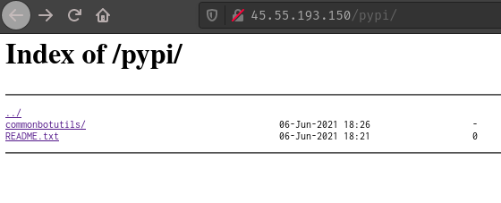

Packaging is critical, tricky step in software development. However it does not always need to be so complicated. This article shows a few steps that should get you up and running with nginx as your self-hosted pypi. With a little bash scripting you should be able to turn this into a nice solution potentially meeting the needs of your package distribution problems. This idea comes from the official Pypi documentation on hosting your own pypi.
Before I just show how, it should be noted that this is not production ready. For this to be production ready you would need to at least have a domain and SSL certificate for your nginx server. I will not cover how to do that because there is ton's of that info out on the internet already. Additionally, I will also not cover the best practices for nginx. I'm not an expert there and I don't intend to be. It's not rocket science but there is more research to do to make sure this well-configured.
Here's the basic flavor of how this works. Assume you've got a "common" utilities library, and it needs to be shared amongst different applications. Let's assume that your package follows the Python packaging tutorial (which is quite good nowadays). So that you've got your basic layout something like this:
.
├── LICENSE
├── pyproject.toml
├── README.md
├── setup.cfg
├── src
│ └──common
│ └── __init__.py
└── tests
The layout doesn't really matter but what does matter is that you can build your package into a "whl" and "tar.gz". There are more than a few ways to do this. But I've been using the most recently developed tool by the Pypi packaging team, "build". So assuming you've set up your package according to the tutorial above, you'll be able to run the following command to build your package:
$ python3 -m venv venv
$ . venv/bin/activate
(venv) $ pip install build
(venv) $ python3 -m build
After running the build command you'll get a bunch of output and at the end of the day you'll get the build artifacts in your "dist" folder:
.
├── dist
│ ├── commonbotutils-0.0.1-py3-none-any.whl
│ └── commonbotutils-0.0.1.tar.gz
And that's essentially it. This "whl" file is what would go to pypi. But I want a private repository. So this is where nginx configuration comes in:
root@hgwt:/etc/nginx/sites-available# cat fileserv.conf
server {
root /var/www/data;
location /pypi/ {
autoindex on;
}
}
After adding that configuration to "sites-enabled", you'll be able to auto-index and thereby serve any and all files from the /var/www/data/pypi/ directory, including the custom packages you choose to upload there:

After sftp/scp-ing the commonbotutils-0.0.1.tar.gz onto my server and moving it into the directory above, within it's own folder called "commonbotutils", I'm able to install that package from anywhere I want.
I.e. On my local machine:
pip install --trusted-host 45.55.193.150 --extra-index-url http://45.55.193.150/pypi/ commonbotutils
There you have it, a cheap/simple way of dealing with Python package distribution. Of course there are security issues to keep in mind. Are you OK with your code being available to the public internet? Could a malicious user intercept your traffic and send you the wrong code? Have your Python packages being scanned for security vulnerabilities? Are you putting others at risk? As with all security risks you'll need to determine your priorities. For me, this is purely for fun, so I get to take the easy way out. But also keep this in mind next time you're paying for some big hefty packaging solution. There's a time and place for those but make sure you're getting more than just a file server ;-)
Also I am no expert with Python packaging. What do I know is that the python core developers have been working on improving this part of the ecosystem. I'm sure there are plenty of other ways of dealing with that, i.e. "flit", "poetry". I tend to prefer what the core team recommends. But recognize the benefits of competition in this space, and maybe there are better ways than the new "build" tool. But as far as I can see it's a great improvement over the traditional setuptools approach I learned a few years ago, so I'm happy with it.